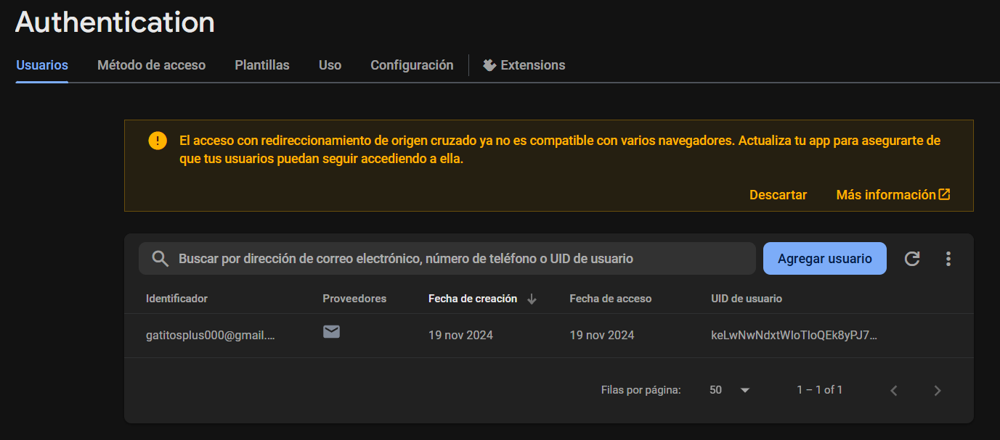

Entrega final
Escrito por: Miguel Ángel Diosdado Rodríguez y Fernanda Montserrat Hernández ÁvilaFecha: 15 de noviembre de 2024
Sistema de autenticación
Se integró al proyecto un sistema de autenticación utilizando Firebase Auth

Firebase Auth permite a los usuarios registrarse en la aplicación utilizando su correo electrónico y contraseña, así como también iniciar sesión en la aplicación. Firebase Auth permite además agregar diferentes formas de autenticación como Facebook, Google, Apple, GitHub, Microsoft, etc. de manera muy sencilla. También cuenta con las integraciones de recuperación de contraseña, cambio de correo y verificación de 2 pasos.
Sistema de autorización
Se integró al proyecto un sistema de autorización utilizando Firebase Auth, por lo que ahora se compueba cuando el usuasrio tiene una sesión iniciada para realizar cualquier movimiento. En la versión anterior, se usaban las sesiones del framework Express, las cuales a pesar de ser seguras, son más difíciles de implementar.
Control de gastos
Se implementó un control de gastos para solicitar el presupuesto a los stakeholders. La siguiente tabla muestra los gastos presupuestados:
| Concepto | Monto |
|---|---|
| Desarrollo de software backend | $40,000 |
| Desarrollo de software frontend | $30,000 |
| Infraestructura | $3,000 |
| APIS | $2,000 |
| Documentación | $5,000 |
Eliminación de expedientes
Se implementó un sistema de eliminación de expedientes que los da de baja en lugar de eliminarlos definitivamente de la base de datos.
Modificación de expedientes
Se implementó un sistema de modificación de expedientes que permite recuperar y modificar los datos de los expedientes en caso de escribir erróneamente algún dato.
Notificaciones
Se implementó un sistema de notificaciones para el préstamo y la devolución de expedientes, que notifica quién tomó, prestó, eliminó un expediente de manera reciente.
Documentos digitales
Se integró la funcionalidad de cargar documentos digitales a los expedientes.
Sistema de búsqueda
Se implementó un sistema de búsqueda que permite la búsqueda de expedientes en cualquier estado (en préstamo, devuelto, etc).
Conclusiones
En conclusión, el proyecto SIMAPE ha sido un éxito, ya que se han cumplido con los objetivos planteados y se han implementado todas las funcionalidades solicitadas por los stakeholders.
El proyecto ha sido desarrollado siguiendo las mejores prácticas de desarrollo de software y se ha utilizado la metodología DEVOPS para la gestión del proyecto.
El proyecto ha sido entregado en tiempo y forma, cumpliendo con los plazos establecidos y con la calidad esperada.